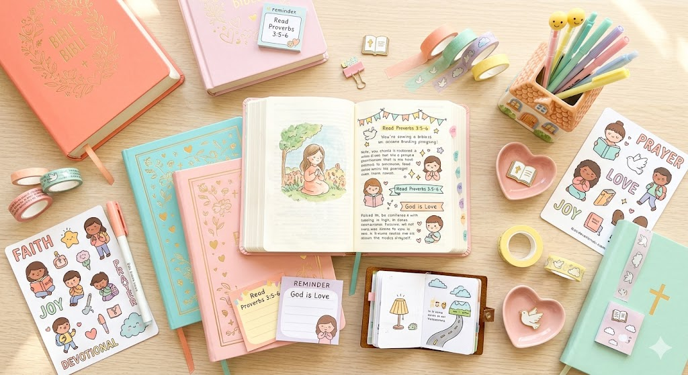

Um devocional de qualidade começa com um momento de silêncio e disposição no coração, onde você lê a Palavra com calma,
sem pressa, prestando atenção em cada versículo sempre meditando sobre o que Deus quer falar com você através daquele texto.
Você pode escolher um trecho curto para conseguir meditar melhor e ir anotando o que mais chamar a sua atenção. É indicado que você
destaque as palavras ou frases no texto que tocarem seu coração e escrever com suas próprias palavras o que você for entendendo ou for tendo dúvidas.
Pense em como aquela mensagem se aplica à sua vida hoje. Faça perguntas a si mesma sobre o texto e sobre a vontade de Deus.
Depois separe um momento para oração, agradecendo e entregando suas preocupações ao Senhor.
E se desejar, memorize um versículo para guardar no coração durante o dia.
Assim, o devocional deixa de ser só leitura e se torna comunhão real com Deus.
Além dos materiais básicos, você pode usar marcadores de página para organizar seus estudos, adesivos para decorar seu caderno, e até aplicativos de devocional no celular para receber inspirações diárias.
O importante é criar um ambiente que te motive a se conectar com Deus de forma profunda e significativa.
Se você deseja se aprofundar mais nesse assunto, você pode mergulhar no tema: O que é um devocional?.